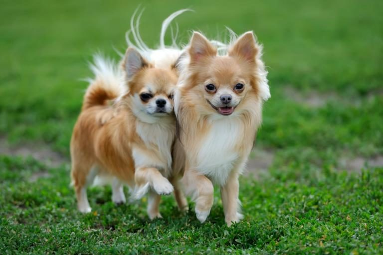

| Perros en adopcion |
| Nombre |
imagen |
RAZA |
CABEZAS |
ALIMENTACION |
| Bulldog |
|
raza canina originaria del Reino Unido. Su ancestro, conocido como el Antiguo Bulldog Inglés, fue utilizado en peleas de perros con toros hasta mediados del siglo XVII, aunque en 1835 esta práctica fue prohibida en Reino Unido. |
4(dos machos y dos hembras) |
alimentación del Bulldog Inglés, a diferencia de otras razas, estos tienen el hocico chato, lo que impide que muchas veces se alimenten correctamente, debido a que los recipientes en su mayoría, son demasiado hondos.Se recomienda siempre ofrecerle un alimento balanceado y de alta calidad como el pienso Lobo Azul Super Premium Puppy Sensitive, se debe alimentar al cachorro por lo menos 3 o 4 veces al día, respetando siempre las porciones que indique el empaque del concentrado. |
| Pastor alemán |
|
raza canina que proviene de Alemania.La raza es relativamente nueva, ya que su origen se remonta a 1899. Forman parte del grupo de pastoreo, ya que fueron perros desarrollados originalmente para reunir y vigilar ovejas. |
5 |
como en el resto de canes, la alimentación del pastor alemán es principalmente carnívora, y va a variar dependiendo de la etapa en la que se encuentre el animal: cachorro, joven, adulto o anciano.El comedero y bebedero debe mantenerse en buen estado y limpio para evitar problemas de salud al perro. |
| Poodle |
|
raza canina que hasta el siglo XV se consideró de uso exclusivo de los aristócratas y nobles. Fue un perro cobrador de aguas hasta el Renacimiento: recuperaban las presas ya cazadas que habían caído al agua, como patos y cisnes. |
4 |
La frecuencia de la alimentación de tu perro, va a depender en primer lugar de la edad y el tamaño. Lo ideal para tu poodle toy es alimentarlo con 4 comidas al dia hasta que alcanza los 3 meses, 3 comidas al dia hasta cumplir los 6 meses de edad y 2 comidas al día desde los 6 meses hasta la adultez. |
| Dachshund |
 |
raza canina. Su peculiar fisonomía se debe a una mutación genética conocida como bassetismo, que dota a los ejemplares de unas extremidades cortas en relación con el tamaño del cuerpo. |
6 |
La naturaleza del perro salchicha es comer carne; sin embargo también pueden comer ciertas verduras y frutas. Por un lado la fruta tiene bastante azúcar y eso hace que los perros deban comerla con moderación. Es por eso que la fruta y verdura sólo debe ser un complemento en sus dietas. |
| Chihuahua |
 |
raza de perro originaria de México. Es una de las razas de perros más antiguas del continente americano, además de ser el perro más pequeño del mundo. El perro chihuahua es originario del estado mexicano de Chihuahua. |
7 |
El chihuahua no necesita una alimentación especial, pero existen algunos detalles que debes tener en cuenta. A ser posible, apuesta por el pienso seco o las croquetas como base de su dieta diaria e incluye la comida húmeda solo como complemento. |
| Pug |
|
raza de perro con origen histórico en China, pero con el patrocinio de Reino Unido. Se trata de un perro pequeño de tipo molosoide, el cual es utilizado como mascota. |
5 |
Las porciones varían de acuerdo con el peso y la actividad física del pug, pero se recomienda administrar entre 120 y 150 gramos de carne (o pescado), de 10 a 30 gramos de cereales como arroz y entre 20 y 30 gramos de frutas y verduras. |
| Shih Tzu |
 |
raza de perro originaria de Tíbet. Los asiáticos los criaban y arreglaban para que se parecieran a alfombras vivientes, de acuerdo con la cultura china, siendo muy apreciados como perros guardianes. |
4 |
Para favorecer una buena digestión, el pienso para shih tzu debe estar compuesto por ingredientes naturales y de alta digestibilidad. Además, como los perros pequeños suelen ser muy sibaritas, hay que procurar ofrecerles un pienso de gran palatabilidad y acorde con sus gustos. |
| Schnauzer miniatura |
|
es la versión pequeña de la raza canina de origen alemana Schnauzer, surgido en Alemania en la segunda mitad del siglo XIX. |
2 |
Si se castra al perro, se deberá suministrar pienso especial para perros castrados. Al envejecer se le suministrará pienso para perros ancianos. Debemos limitar las golosinas y erradicar la alimentación con las sobras del alimento para humanos, demasiado condimentado y salado para el organismo canino. |
| Chow Chow |
|
raza canina originaria del Norte de China. Se cree que fue uno de los perros nativos utilizados como modelo para el perro de Foo, los guardianes tradicionales de piedra que se encuentran en frente de los templos y palacios budistas. |
2 |
Respecto la alimentación, para conseguir los mejores resultados, debes alimentar a tu chow chow con un aporte adecuado de proteínas, hidratos, grasas, minerales y vitaminas. |